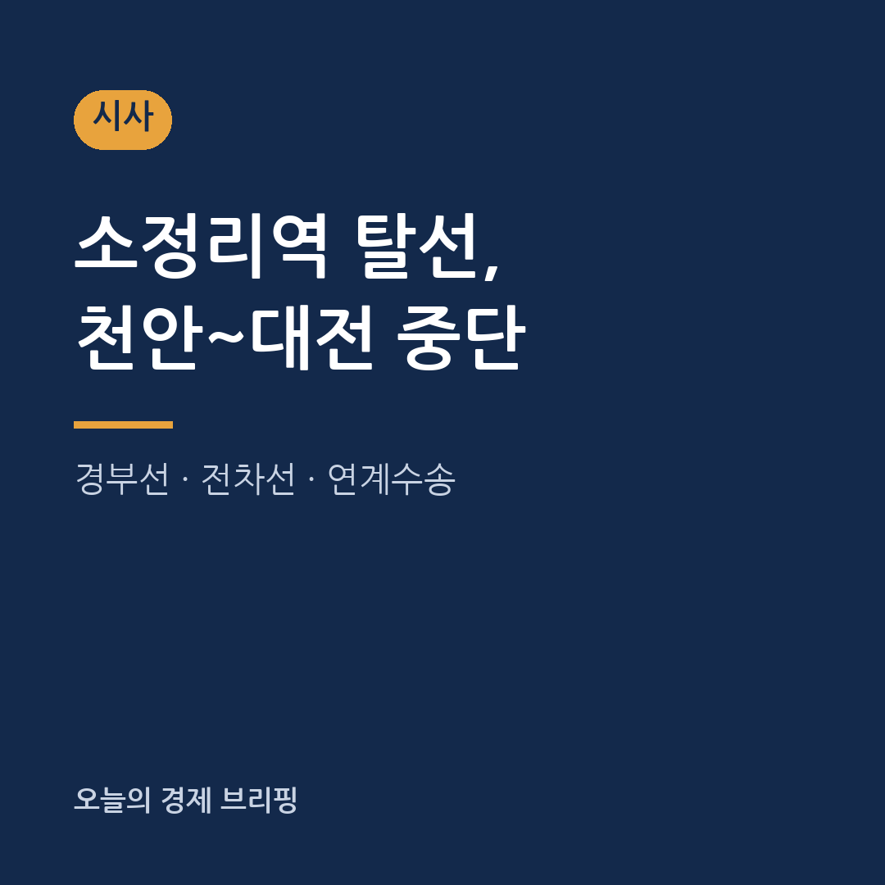
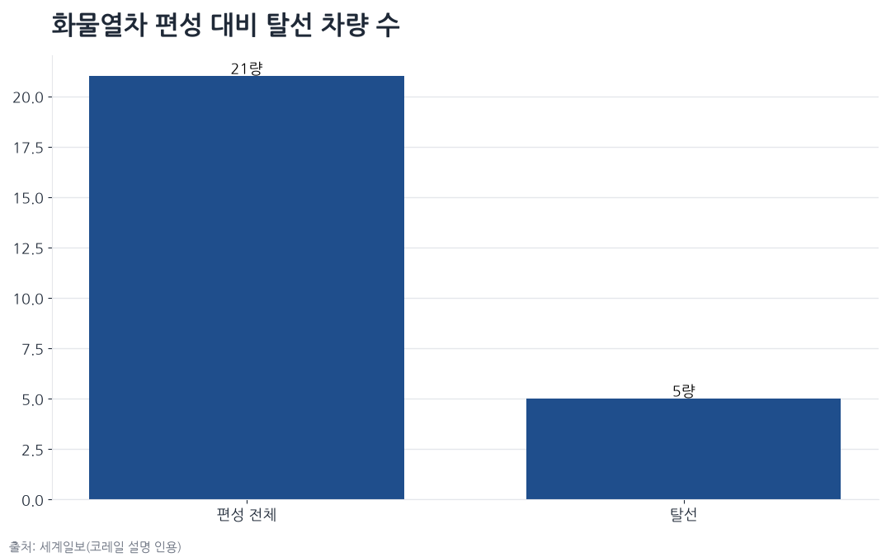

2026-11-21-1221-tistory 발행 키트 · 이 페이지는 검색에 노출되지 않습니다.
제목
카테고리
시사태그
본문 (그림·표 포함)
휴대폰 블로그 앱에서는 그림이 같이 붙지 않을 수 있어요. 그때는 [글자만 복사] 후 아래 이미지를 저장해 [그래프1]·[표1] 자리에 첨부하세요.

핵심 결론부터 정리합니다. 11월 21일 새벽 경부선 소정리역에서 화물열차가 탈선했고, 전력 공급이 끊기면서 천안~대전 구간의 일반열차 운행이 중단되었습니다. 코레일은 이 구간에 버스 연계수송을 투입했으며, 국토교통부는 철도사고 재난 위기경보 '주의'를 적용했습니다.
▶ 배경: 사고 발생 시각과 장소
사고는 21일 오전 5시 37분경 세종시 소정면의 소정리역 진입 과정에서 발생했습니다. 코레일에 따르면 화물열차 21량 중 5량이 궤도를 벗어났습니다.
인명 피해는 없는 것으로 파악되었습니다. 다만 이 과정에서 전차선(열차에 전력을 공급하는 공중 전선)이 끊겼습니다.

▶ 핵심 내용: 전력 중단과 운행 차질
전차선이 끊기면서 천안~전의 구간의 전력 공급이 중단되었고, 그 결과 천안~대전 구간에서 일반열차를 운행할 수 없게 되었습니다. 광주에서 용산으로 향하는 일반열차 역시 운행하지 못했습니다.
현장에서는 기중기와 크레인으로 탈선 차량을 치우고 전차선을 철거하는 복구 작업이 진행 중입니다. 정상 운행 재개 시점은 수집된 자료에서 확인되지 않았습니다.
▶ 대응: 코레일과 정부 조치
코레일은 천안역·조치원역과 대전·서대전역을 잇는 버스 연계수송을 시작했습니다. 아울러 일부 일반열차는 서울·용산~천안, 대전·서대전~부산·광주·목포 구간에서 나누어 반복 운행하는 방식으로 불편을 줄이겠다는 계획입니다.
정부 차원에서는 국토교통부가 철도사고 재난 위기경보 '주의' 단계를 적용했습니다. 단계의 세부 기준과 후속 조치는 이번 수집 자료만으로는 확인되지 않아 별도 공지를 살펴볼 필요가 있습니다.
사고 대응 현황 정리
| 주체 | 조치 | 대상 구간 |
|---|---|---|
| 코레일 | 버스 연계수송 시작 | 천안·조치원역 ↔ 대전·서대전역 |
| 코레일 | 일반열차 구간 나누어 반복 운행 | 서울·용산~천안, 대전·서대전~부산·광주·목포 |
| 국토교통부 | 철도사고 재난 위기경보 '주의' 적용 | 경부선 사고 관련 |
| 현장 복구 | 탈선 차량 제거, 전차선 철거 진행 | 소정리역 일대 |
출처: 세계일보, 연합뉴스
▶ 영향: 이용객이 겪는 변화
우선 천안~대전을 지나는 경부선 이용객은 소요 시간이 길어질 수 있습니다. 열차와 버스를 갈아타야 하기 때문입니다.
또 주말에 시험 일정이 잡힌 수험생의 이동에도 부담이 생겼다는 보도가 있었습니다. 시간이 정해진 일정이라면 평소보다 이른 출발이 필요합니다.
▶ 확인할 점
첫째, 탑승 예정 열차의 운행 여부와 지연 시간을 코레일 안내로 다시 확인해야 합니다. 둘째, 버스 연계수송이 이루어지는 역 위치와 환승 동선을 미리 파악해 두는 편이 좋습니다. 셋째, 복구 상황에 따라 운행 계획이 바뀔 수 있으므로 공지를 계속 확인해야 합니다.
▶ 정리
1. 21일 오전 5시 37분경 소정리역에서 화물열차 21량 중 5량 탈선, 인명 피해 없음.
2. 전차선 파손으로 천안~대전 구간 일반열차 운행 중단, 코레일은 버스 연계수송 시작.
3. 국토교통부는 철도사고 위기경보 '주의' 적용, 이용 전 열차 운행 여부 확인 필수.
출처 (본문 맨 아래에 붙여넣기 권장)
- 세계일보, 수험생들 ‘발 동동’…경부선 화물열차 탈선에 일반열차 운행 중단, https://www.segye.com/newsView/20261121503385 - 세계일보, [속보] 코레일, 천안∼조치원∼대전·서대전 구간 버스 연계수송, https://www.segye.com/newsView/20261121503773 - 연합뉴스, 국토부, 경부선 화물열차 탈선에 철도사고 위기경보 '주의', https://www.yna.co.kr/view/AKR20261121032200003 - 연합뉴스, 화물열차 탈선 여파…광주발 용산행 일반열차 운행 중단, https://www.yna.co.kr/view/AKR20261121029400054 - 연합뉴스, [현장] 엿처럼 휘어진 전철주·선로 밖 나뒹군 화물열차…"자다가 뛰어나갔다더라", https://www.yna.co.kr/view/AKR20261121030600063